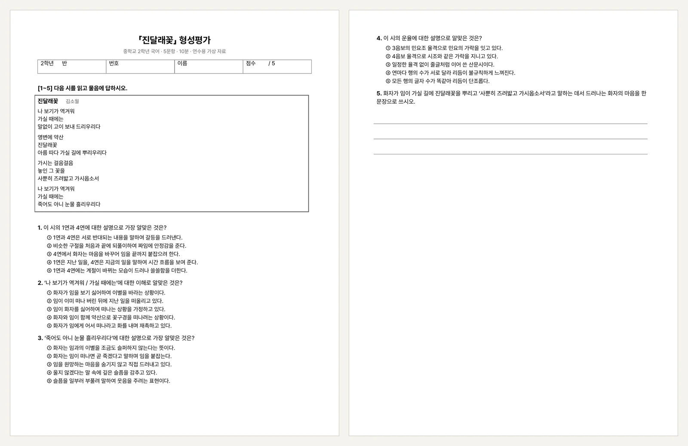
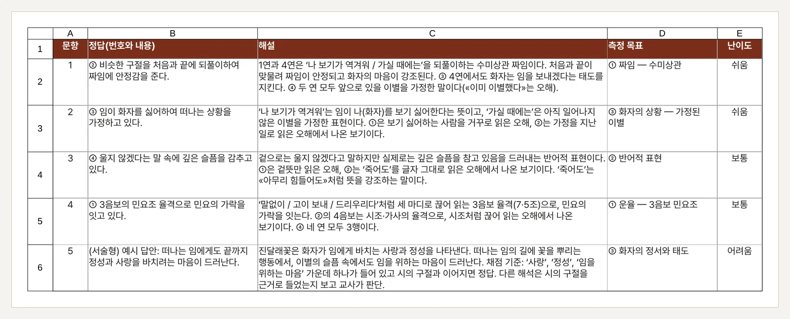

형성평가 문항 만들기
작품과 수업 자료를 폴더에 넣고 출제 계획을 먼저 받은 뒤, 문항지(워드)와 정답·해설표(엑셀)를 만들고 학생 입장에서 다시 풀어 검수합니다.
- 목표
- 교사가 적은 학습 목표 3가지를 재는 형성평가 5문항(선택형 4 · 서술형 1)과 정답·해설표를 만든다 (예시: 중학교 2학년 국어 — 김소월 «진달래꽃»)
- 준비물
- 예시 파일 진달래꽃.txt(작품 원문, 공유 저작물)와 진달래꽃_수업자료.docx(학습 목표·학생 오해, 연수용 가상 자료)를 넣은
클로드연수/3차시폴더 - 결과물
- ① 출제 계획 표 ②
진달래꽃_형성평가.docx③진달래꽃_정답해설.xlsx④ 자체 검수 표 - 주의
3차시폴더만 연결 · 해석이 갈리는 내용은 정답으로 삼지 않기 · 학생에게 내기 전에 교사가 직접 풀기
문항은 채팅에서도 금방 나오지만, 코워크는 폴더의 작품과 수업 자료를 읽고 문항지와 정답표를 파일로 저장합니다. 형성평가에서 가장 흔한 사고는 그럴듯한데 정답이 둘인 문항입니다. 그래서 핵심은 둘입니다. 문항을 쓰기 전에 출제 계획을 표로 받아 학습 목표·난이도·오답의 근거를 먼저 맞추는 것, 그리고 다 만든 뒤 학생 입장에서 다시 풀게 하고, 교사도 직접 풀어 정답이 하나뿐인지 확인하는 것입니다.
먼저 볼 영상

1 준비
클로드연수안에3차시폴더를 만들고, 예시 파일 두 개를 내려받아 넣습니다.
진달래꽃.txt — 1925년 시집 『진달래꽃』에 실린 작품을 오늘날 맞춤법으로 옮긴 원문입니다. 저작권 보호 기간이 끝난 공유 저작물입니다.
진달래꽃_수업자료.docx — 교사가 적은 학습 목표 3가지, 수업에서 다룬 내용, 학생들이 자주 하는 오해가 들어 있는 가상 자료입니다.- 내 수업으로 해 보려면 수업 자료에 학습 목표와 학생들이 자주 하는 오해를 꼭 적어 둡니다. 이 두 가지가 문항의 질을 정합니다. 교과서 지문을 넣었다면 만든 문항지는 수업 안에서만 쓰고 인터넷에 올리지 않습니다.
2 따라 하기
번호 순서대로 진행합니다. 프롬프트가 필요한 단계에는 바로 아래에 복사 단추가 있습니다.
- 클로드 데스크톱 앱에서 새 대화를 엽니다.
새 화면 메시지 상자에 바로 요청합니다. 예전 화면 메시지 상자에서 Cowork 를 먼저 고릅니다. - 메시지 상자에서 내 컴퓨터 폴더를 연결하는 단추를 눌러
클로드연수/3차시폴더를 고릅니다. 단추 이름은 화면 문구를 따릅니다. - 권한 설정을 Manual(수동)로 둡니다.
- 출제 계획만 먼저 받습니다. 아래 프롬프트를 보내면 클로드가 작품과 수업 자료를 읽고 문항별 계획을 표로 보여 줍니다.
연결한 폴더(3차시)에 있는 작품 원문(진달래꽃.txt)과 수업 자료(진달래꽃_수업자료.docx)를 읽고, 형성평가 출제 계획만 먼저 세워 주세요. 아직 문항을 다 쓰거나 파일을 만들지 마세요. 조건 - 학습 목표는 수업 자료에 제가 적은 3가지만 쓰기 (새 목표를 만들지 않기) - 5문항: 선택형(5지선다) 4문항 + 서술형 1문항, 10분 안에 풀 분량 - 난이도 배분: 쉬움 2 · 보통 2 · 어려움 1 - 학습 목표마다 문항이 하나 이상 - 오답 보기는 수업 자료의 «학생들이 자주 하는 오해»에서 가져오기 - 작품 해석은 교과서에서 널리 받아들이는 범위에서만. 해석이 갈리는 내용은 정답으로 삼지 않기 - 작품을 인용할 때는 원문 파일 그대로 (고쳐 쓰지 않기) 계획은 표로 보여 주세요: 문항 번호 | 유형 | 난이도 | 측정할 학습 목표 | 묻는 내용 | 오답 보기에 쓸 오해
«오답 보기는 학생들이 자주 하는 오해에서»가 이 차시의 핵심 문장입니다. 오답이 실제 오해에서 나와야 학생이 어디서 헷갈리는지 문항 결과로 드러납니다. «해석이 갈리는 내용은 정답으로 삼지 않기»를 적어 두면 논란이 생길 문항을 계획 단계에서 거를 수 있습니다.
캡처 넣을 곳 · L03-1
출제 계획 표 (따라 하기 4번).- 프롬프트 1에 대한 답 — 5문항의 출제 계획 표가 보이게
- 빨간 상자: «오답 보기에 쓸 오해» 열
- 계획을 읽고 고칠 점은 말로 고칩니다. 예: «3번 문항의 오해는 ‘죽어도’를 글자 그대로 읽는 것도 함께 넣어 주세요», «서술형 채점 기준을 정답과 부분 점수 두 단계로 나눠 주세요»
- 문항지와 정답·해설표를 만듭니다. 아래 프롬프트를 보내고, 클로드가 허락을 구하면 내용을 보고 승인합니다.
출제 계획대로 문항을 만들어 3차시 폴더에 두 파일로 저장해 주세요. 1. 진달래꽃_형성평가.docx (학생용 문항지) - 맨 위에 학년·반·번호·이름·점수 칸 - 작품 전문을 테두리 상자에 넣기 (원문 파일 그대로) - 선택형 보기는 ①~⑤, 서술형은 답을 쓸 줄 3줄 - A4 앞뒤 한 장 안에 2. 진달래꽃_정답해설.xlsx (교사용) - 열: 문항 | 정답(번호와 내용) | 해설 | 측정 목표 | 난이도 - 해설에는 정답인 까닭과, 오답 보기가 어떤 오해에서 나왔는지 함께 - 서술형은 예시 답안과 채점 기준 - 첫 줄 고정, 셀 안에서 줄 바꿈 정답 번호가 한 번호에 몰리지 않게 하고, 정답 보기만 유독 길거나 자세하지 않게 해 주세요.
«정답 보기만 유독 길거나 자세하지 않게»는 실제로 자주 걸리는 문제입니다. 학생들은 «가장 긴 보기가 정답»이라는 요령을 씁니다. 연수자료의 결과 예시도 처음 만들었을 때 네 문항 모두 정답 보기가 가장 길어서 오답 보기를 다시 썼습니다.
캡처 넣을 곳 · L03-2
만들어진 두 결과 파일 (따라 하기 6번).- 대화에 나온 두 파일 이름과, 둘 중 하나의 미리보기
- 빨간 상자: 결과 파일 두 개
- 학생 입장에서 다시 풀게 해서 스스로 검수하게 합니다.
이제 정답·해설 파일은 보지 말고, 중학생이 되어 문항지만 보고 처음부터 다시 풀어 주세요. 그다음 정답·해설과 비교해 아래를 점검하고 표로 알려 주세요: 문항 | 내가 고른 답 | 정답 | 문제점 1. 정답이 하나뿐인지 — 정답으로 볼 수 있는 보기가 둘 이상이거나 하나도 없는 문항 2. 해설이 문항지와 맞는지 — 정답 번호나 보기 내용이 어긋난 곳 3. 작품 원문을 잘못 옮긴 곳 4. 해석이 갈리는 내용을 정답으로 삼은 곳 5. 정답의 힌트가 드러난 곳 — 정답 보기만 길거나 자세한 것, 다른 문항이 답을 알려 주는 것 아직 고치지 말고 고칠 곳을 먼저 보여 주세요. 제가 허락하면 두 파일을 함께 고쳐 주세요.
문항을 만든 쪽이 다시 푸는 것이라 완전히 모르는 상태에서 푸는 것은 아닙니다. 그래도 정답이 둘인 보기나 해설과 번호가 어긋난 곳을 찾는 데 도움이 됩니다. «두 파일을 함께 고쳐»를 빼면 문항지만 고치고 정답표는 그대로 두는 일이 생깁니다.
- 교사가 직접 풉니다. 문항지만 인쇄해 정답표를 보지 않고 풀어 보고, 10분 안에 풀리는지 시간을 잽니다. 끝나면 정답표와 맞춰 봅니다. 가능하면 같은 교과 선생님께도 한 번 풀어 달라고 부탁합니다.
- 문항지는 워드에서 열어 학교 양식에 옮기거나 그대로 인쇄합니다. 한글(HWPX) 문항지로 바꾸는 방법은 4차시에서 다룹니다.
3 결과 예시


예시 문항지 내려받기 (docx) → · 예시 정답·해설 내려받기 (xlsx) →
4 검증 포인트
② 정답표와 문항지 — 엑셀의 정답 번호와 내용이 문항지의 보기와 글자까지 같은지 봅니다. 보기 순서를 바꾼 뒤에는 꼭 다시 봅니다.
③ 작품 원문 — 문항지의 작품이 원문 파일과 한 글자도 다르지 않은지 봅니다. 띄어쓰기·행 나눔도 봅니다.
④ 해석의 범위 — 정답의 근거가 교과서에서 널리 받아들이는 해석인지 봅니다. 해석이 갈리는 내용은 서술형으로 돌리거나 뺍니다.
⑤ 학습 목표 — «측정 목표» 열이 수업 자료의 목표 3가지 안에 있는지, 목표마다 문항이 하나 이상인지 봅니다.
⑥ 오답 보기 — 오답이 학생의 실제 오해에서 왔는지, 아무도 고르지 않을 터무니없는 보기는 없는지 봅니다.
⑦ 정답의 힌트 — 정답 보기만 유독 길거나 자세하지 않은지, 정답 번호가 한쪽에 몰리지 않았는지, 다른 문항이 답을 알려 주지 않는지 봅니다.
⑧ 서술형 채점 기준 — 예시 답안과 다른 표현으로 쓴 답도 채점 기준만으로 판단할 수 있는지 봅니다.
5 다른 교과에 적용하기
따라 하기 4단계 프롬프트 대신 아래 교과 프롬프트를 씁니다. 6단계와 7단계는 파일 이름을 바꾼 아래 공통 프롬프트로 씁니다. 교과마다 «검수할 때 볼 것»을 넣어 두었으니 7단계에서 함께 점검됩니다. 수업 자료(학습 목표·학생 오해)는 각 교과 선생님이 직접 쓴 것을 차시 폴더에 넣습니다. 교과를 눌러 펼친 뒤 복사합니다.
출제 계획대로 문항을 만들어 연결한 폴더에 두 파일로 저장해 주세요. 1. [주제]_형성평가.docx (학생용 문항지) - 맨 위에 학년·반·번호·이름·점수 칸 - 지문·자료가 있으면 테두리 상자에 넣기 (첨부 파일 그대로) - 선택형 보기는 ①~⑤, 서술형은 답을 쓸 줄 3줄 - A4 앞뒤 한 장 안에 2. [주제]_정답해설.xlsx (교사용) - 열: 문항 | 정답(번호와 내용) | 해설 | 측정 목표 | 난이도 - 해설에는 정답인 까닭과, 오답 보기가 어떤 오해에서 나왔는지 함께 - 서술형은 예시 답안과 채점 기준 - 첫 줄 고정, 셀 안에서 줄 바꿈 정답 번호가 한 번호에 몰리지 않게 하고, 정답 보기만 유독 길거나 자세하지 않게 해 주세요.
이제 정답·해설 파일은 보지 말고, 중학생이 되어 문항지만 보고 처음부터 다시 풀어 주세요. 그다음 정답·해설과 비교해 아래를 점검하고 표로 알려 주세요: 문항 | 내가 고른 답 | 정답 | 문제점 1. 정답이 하나뿐인지 — 정답으로 볼 수 있는 보기가 둘 이상이거나 하나도 없는 문항 2. 해설이 문항지와 맞는지 — 정답 번호나 보기 내용이 어긋난 곳 3. 출제 계획의 «검수할 때 볼 것» 4. 정답의 힌트가 드러난 곳 — 정답 보기만 길거나 자세한 것, 다른 문항이 답을 알려 주는 것 아직 고치지 말고 고칠 곳을 먼저 보여 주세요. 제가 허락하면 두 파일을 함께 고쳐 주세요.
국어품사예문의 낱말 품사 고르기, 예문은 수업 자료의 문장만
연결한 폴더의 수업 자료를 읽고, 중학교 국어 «품사» 형성평가 출제 계획만 먼저 세워 주세요. 아직 문항을 다 쓰거나 파일을 만들지 마세요. 조건 - 학습 목표는 수업 자료에 제가 적은 것만 쓰기 - 6문항: 선택형 5 + 서술형 1 (서술형은 두 낱말의 품사가 다른 까닭 쓰기) - 난이도 배분: 쉬움 2 · 보통 3 · 어려움 1 - 예문은 수업 자료에 있는 문장만 쓰기 - 오답 보기는 학생들이 자주 헷갈리는 짝에서 가져오기 (수업 자료의 오해가 있으면 그것부터) - 품사 이름은 교과서의 9품사 용어로 검수할 때 볼 것 - 한 낱말이 문장에 따라 품사가 달라지는 경우, 그 문장에서의 품사로 정답을 정했는지 - 문법 학자마다 견해가 갈리는 예를 정답으로 삼지 않았는지 계획은 표로 보여 주세요: 문항 번호 | 유형 | 난이도 | 측정할 학습 목표 | 묻는 내용 | 오답 보기에 쓸 오해
수학일차방정식의 풀이계산 문항은 모든 보기를 대입해 검산, 풀이 과정 서술형
연결한 폴더의 수업 자료를 읽고, 중학교 수학 «일차방정식의 풀이» 형성평가 출제 계획만 먼저 세워 주세요. 아직 문항을 다 쓰거나 파일을 만들지 마세요. 조건 - 학습 목표는 수업 자료에 제가 적은 것만 쓰기 - 6문항: 선택형 5 + 서술형 1 (풀이 과정을 쓰는 문항) - 난이도 배분: 쉬움 2 · 보통 3 · 어려움 1 - 오답 보기는 학생들이 실제로 하는 계산 실수에서 가져오기 (이항할 때 부호를 바꾸지 않음, 괄호를 풀 때 한 항에만 곱함 등) - 해는 정수나 간단한 분수가 되게 - 식은 글자로 쓰기 (예: 3x − 5 = x + 7) 검수할 때 볼 것 - 정답을 원래 방정식에 대입해 검산 - 오답 보기를 대입했을 때 식이 성립하지 않는지 (정답이 둘인 문항 막기) 계획은 표로 보여 주세요: 문항 번호 | 유형 | 난이도 | 측정할 학습 목표 | 묻는 내용 | 오답 보기에 쓸 오해
영어읽기 — 교사가 쓴 지문중심 내용·세부 내용·낱말 뜻, 지문은 첨부 파일만
연결한 폴더의 수업 자료와 지문 파일을 읽고, 중학교 영어 읽기 형성평가 출제 계획만 먼저 세워 주세요. 아직 문항을 다 쓰거나 파일을 만들지 마세요. 조건 - 학습 목표는 수업 자료에 제가 적은 것만 쓰기 - 지문은 제가 쓴 첨부 파일만 쓰고, 고쳐 쓰지 않기 - 5문항: 중심 내용 1, 세부 내용 2, 낱말 뜻 1, 서술형(우리말로 답하기) 1 - 난이도 배분: 쉬움 2 · 보통 2 · 어려움 1 - 발문과 보기는 우리말로, 지문 인용만 영어로 - 오답 보기는 지문에 나온 낱말을 쓰되 뜻이 틀린 것 등 학생이 자주 하는 오해에서 검수할 때 볼 것 - 세부 내용 문항의 정답 근거가 지문의 몇째 문장인지 짚을 수 있는지 - 지문만 읽고는 알 수 없는 배경지식을 묻지 않았는지 계획은 표로 보여 주세요: 문항 번호 | 유형 | 난이도 | 측정할 학습 목표 | 묻는 내용 | 오답 보기에 쓸 오해
과학물질의 상태 변화가열 곡선 그래프 해석, 입자 배열 오개념 보기
연결한 폴더의 수업 자료를 읽고, 중학교 과학 «물질의 상태 변화» 형성평가 출제 계획만 먼저 세워 주세요. 아직 문항을 다 쓰거나 파일을 만들지 마세요. 조건 - 학습 목표는 수업 자료에 제가 적은 것만 쓰기 - 6문항: 선택형 5 + 서술형 1 (상태 변화를 입자 배열로 설명하기) - 난이도 배분: 쉬움 2 · 보통 3 · 어려움 1 - 그래프 문항은 수업 자료에 있는 그래프만 쓰고, 문항지에는 «그래프 자리»로 표시 - 오답 보기는 학생 오개념에서 가져오기 (상태가 변하면 입자의 크기·개수가 변한다 등) - 용어는 교과서 표기로 (융해, 응고, 기화, 액화, 승화) 검수할 때 볼 것 - 상태가 변할 때 입자 자체는 변하지 않고 배열·움직임만 변한다는 설명과 맞는지 - 그래프에서 읽은 값이 수업 자료의 그래프와 같은지 계획은 표로 보여 주세요: 문항 번호 | 유형 | 난이도 | 측정할 학습 목표 | 묻는 내용 | 오답 보기에 쓸 오해
사회기후 그래프 읽기기온·강수량 그래프로 기후 판단, 자료는 첨부 파일만
연결한 폴더의 수업 자료와 자료 파일을 읽고, 중학교 사회 «기후 그래프 읽기» 형성평가 출제 계획만 먼저 세워 주세요. 아직 문항을 다 쓰거나 파일을 만들지 마세요. 조건 - 학습 목표는 수업 자료에 제가 적은 것만 쓰기 - 5문항: 선택형 4 + 서술형 1 (그래프를 근거로 기후를 판단한 까닭 쓰기) - 난이도 배분: 쉬움 2 · 보통 2 · 어려움 1 - 기온·강수량 자료는 첨부 파일의 숫자만 쓰고, 출처와 기준 연도를 문항지에 적기 - 오답 보기는 학생들이 자주 하는 오해에서 (남반구 도시의 계절을 북반구처럼 읽음 등) 검수할 때 볼 것 - 그래프의 숫자가 첨부 파일과 같은지 - 판단 기준(예: 가장 추운 달 평균 기온)이 수업 자료의 기준과 같은지 계획은 표로 보여 주세요: 문항 번호 | 유형 | 난이도 | 측정할 학습 목표 | 묻는 내용 | 오답 보기에 쓸 오해
역사사건의 순서와 원인연표·순서 배열·원인 고르기, 연도는 수업 자료 기준
연결한 폴더의 수업 자료를 읽고, 중학교 역사 단원 형성평가 출제 계획만 먼저 세워 주세요. 아직 문항을 다 쓰거나 파일을 만들지 마세요. 조건 - 학습 목표는 수업 자료에 제가 적은 것만 쓰기 - 6문항: 사건 순서 배열 2, 원인·결과 2, 사료 읽기 1, 서술형 1 - 난이도 배분: 쉬움 2 · 보통 3 · 어려움 1 - 연도·인물·사건은 수업 자료에 있는 것만 쓰기 (없는 것을 보기에 넣지 않기) - 사료는 수업 자료에 있는 것만 쓰고 출처를 적기 - 오답 보기는 학생들이 자주 헷갈리는 사건·인물 짝에서 검수할 때 볼 것 - 모든 연도와 순서가 수업 자료와 같은지 - 원인이 여러 가지인 사건에서 한 가지만 정답으로 정해 다른 보기도 맞게 되지 않았는지 계획은 표로 보여 주세요: 문항 번호 | 유형 | 난이도 | 측정할 학습 목표 | 묻는 내용 | 오답 보기에 쓸 오해
도덕개념 이해와 적용개념 문항은 선택형, 가치 판단은 서술형으로
연결한 폴더의 수업 자료를 읽고, 중학교 도덕 단원 형성평가 출제 계획만 먼저 세워 주세요. 아직 문항을 다 쓰거나 파일을 만들지 마세요. 조건 - 학습 목표는 수업 자료에 제가 적은 것만 쓰기 - 5문항: 선택형 3 (개념의 뜻과 사례) + 서술형 2 (상황에 대한 내 생각과 근거) - 난이도 배분: 쉬움 2 · 보통 2 · 어려움 1 - 가치 판단이 필요한 질문은 선택형 정답으로 만들지 말고 서술형으로 - 서술형 채점은 입장이 아니라 근거의 타당성으로 - 상황 글에 실제 학생이 떠오를 이름·사건을 넣지 않기 검수할 때 볼 것 - 선택형 정답이 수업 자료의 개념 정의와 같은지 - 특정 입장을 고르면 감점되는 채점 기준이 없는지 계획은 표로 보여 주세요: 문항 번호 | 유형 | 난이도 | 측정할 학습 목표 | 묻는 내용 | 오답 보기에 쓸 오해
기술·가정식품 표시 읽기영양 성분 표시·유통기한 판단, 표시 자료는 첨부만
연결한 폴더의 수업 자료를 읽고, 중학교 기술·가정 «식품 표시 읽기» 형성평가 출제 계획만 먼저 세워 주세요. 아직 문항을 다 쓰거나 파일을 만들지 마세요. 조건 - 학습 목표는 수업 자료에 제가 적은 것만 쓰기 - 5문항: 선택형 4 + 서술형 1 (두 식품 중 하나를 고르고 표시를 근거로 까닭 쓰기) - 난이도 배분: 쉬움 2 · 보통 2 · 어려움 1 - 식품 표시는 첨부한 예시 표시(교사가 만든 가상 자료)만 쓰고, 실제 상품 이름은 넣지 않기 - 계산 문항(1회 제공량 등)은 숫자가 깔끔하게 떨어지게 - 오답 보기는 학생들이 자주 하는 오해에서 검수할 때 볼 것 - 계산 문항의 답을 직접 검산 - 표시 용어가 수업 자료와 같은지 계획은 표로 보여 주세요: 문항 번호 | 유형 | 난이도 | 측정할 학습 목표 | 묻는 내용 | 오답 보기에 쓸 오해
정보파이썬 실행 결과 예측짧은 코드의 출력 고르기, 모든 코드는 실제 실행해 확인
연결한 폴더의 수업 자료를 읽고, 중학교 정보 «파이썬 반복문» 형성평가 출제 계획만 먼저 세워 주세요. 아직 문항을 다 쓰거나 파일을 만들지 마세요. 조건 - 학습 목표는 수업 자료에 제가 적은 것만 쓰기 - 5문항: 실행 결과 고르기 3, 빈칸 채우기 1, 서술형(코드가 하는 일 설명) 1 - 난이도 배분: 쉬움 2 · 보통 2 · 어려움 1 - 코드는 6줄 이하, 수업에서 배운 문법만 - 오답 보기는 학생들이 자주 하는 실수에서 (range의 끝 값을 포함한다고 생각함, 들여쓰기 범위를 잘못 읽음 등) 검수할 때 볼 것 - 문항의 코드를 모두 실제로 실행해 정답 보기와 출력이 같은지 - 오답 보기 가운데 실제 출력과 같은 것이 없는지 계획은 표로 보여 주세요: 문항 번호 | 유형 | 난이도 | 측정할 학습 목표 | 묻는 내용 | 오답 보기에 쓸 오해
음악악보와 음악 기호셈여림·빠르기·도돌이표, 악보는 그림 자리로
연결한 폴더의 수업 자료를 읽고, 중학교 음악 «악보와 음악 기호» 형성평가 출제 계획만 먼저 세워 주세요. 아직 문항을 다 쓰거나 파일을 만들지 마세요. 조건 - 학습 목표는 수업 자료에 제가 적은 것만 쓰기 - 6문항: 선택형 5 + 서술형 1 (도돌이표가 있는 악보의 연주 순서 쓰기) - 난이도 배분: 쉬움 2 · 보통 3 · 어려움 1 - 악보는 수업 자료에 있는 것만 쓰고, 문항지에는 «악보 자리»로 표시 (교사가 넣음) - 기호 이름과 뜻은 교과서 표기로 - 오답 보기는 학생들이 자주 헷갈리는 기호 짝에서 검수할 때 볼 것 - 기호의 이름·뜻이 교과서와 같은지 - 연주 순서 문항의 정답을 악보를 따라 직접 확인 계획은 표로 보여 주세요: 문항 번호 | 유형 | 난이도 | 측정할 학습 목표 | 묻는 내용 | 오답 보기에 쓸 오해
미술조형 요소와 원리개념 문항 + 작품 자리 감상 서술형
연결한 폴더의 수업 자료를 읽고, 중학교 미술 «조형 요소와 원리» 형성평가 출제 계획만 먼저 세워 주세요. 아직 문항을 다 쓰거나 파일을 만들지 마세요. 조건 - 학습 목표는 수업 자료에 제가 적은 것만 쓰기 - 5문항: 선택형 4 + 서술형 1 (작품에서 쓰인 원리를 찾아 근거 쓰기) - 난이도 배분: 쉬움 2 · 보통 2 · 어려움 1 - 작품 이미지는 문항지에 «작품 자리»로 표시하고 수업 자료에 적은 작품 이름만 쓰기 - 조형 요소·원리 용어는 교과서 표기로 - 오답 보기는 학생들이 자주 헷갈리는 용어 짝에서 검수할 때 볼 것 - 한 작품에 여러 원리가 함께 쓰여 정답이 둘이 되지 않는지 - 작품 이름·작가가 수업 자료와 같은지 계획은 표로 보여 주세요: 문항 번호 | 유형 | 난이도 | 측정할 학습 목표 | 묻는 내용 | 오답 보기에 쓸 오해
체육경기 규칙상황 그림 자리 + 판정 고르기
연결한 폴더의 수업 자료를 읽고, 중학교 체육 종목의 경기 규칙 형성평가 출제 계획만 먼저 세워 주세요. 아직 문항을 다 쓰거나 파일을 만들지 마세요. 조건 - 학습 목표는 수업 자료에 제가 적은 것만 쓰기 - 5문항: 경기 상황을 보고 판정 고르기 4 + 서술형 1 (안전 수칙과 그 까닭) - 난이도 배분: 쉬움 2 · 보통 2 · 어려움 1 - 규칙은 수업 자료에 적은 것(학교 수업용 규칙 포함)만 기준으로 - 상황 그림이 필요하면 «그림 자리»로 표시 - 오답 보기는 학생들이 자주 헷갈리는 판정에서 검수할 때 볼 것 - 판정이 수업 자료의 규칙과 같은지 (공식 규칙과 수업용 규칙이 다르면 수업용 기준) - 상황 설명만으로 판정이 하나로 정해지는지 계획은 표로 보여 주세요: 문항 번호 | 유형 | 난이도 | 측정할 학습 목표 | 묻는 내용 | 오답 보기에 쓸 오해
한문한자의 음과 뜻음·뜻 고르기, 한자어 풀이 서술형
연결한 폴더의 수업 자료를 읽고, 중학교 한문 단원 형성평가 출제 계획만 먼저 세워 주세요. 아직 문항을 다 쓰거나 파일을 만들지 마세요. 조건 - 학습 목표는 수업 자료에 제가 적은 것만 쓰기 - 6문항: 음과 뜻 고르기 3, 한자어 뜻 고르기 2, 서술형(한자어를 한자의 뜻으로 풀이) 1 - 난이도 배분: 쉬움 2 · 보통 3 · 어려움 1 - 한자는 수업 자료에 나온 것만 쓰기 - 오답 보기는 모양이 비슷한 한자, 음이 같은 한자처럼 학생들이 자주 헷갈리는 것에서 검수할 때 볼 것 - 한자의 음과 뜻(훈)이 교과서 표기와 같은지 - 한자가 깨지지 않고 바르게 표시되는지 계획은 표로 보여 주세요: 문항 번호 | 유형 | 난이도 | 측정할 학습 목표 | 묻는 내용 | 오답 보기에 쓸 오해
담임안전 교육 확인 퀴즈화재 대피 교육 뒤 5문항, 정답은 학교 안내문 기준
연결한 폴더의 학교 화재 대피 안내문을 읽고, 학급 안전 교육 뒤에 풀 확인 퀴즈의 출제 계획만 먼저 세워 주세요. 아직 문항을 다 쓰거나 파일을 만들지 마세요. 조건 - 5문항: 선택형 4 + 서술형 1 (우리 교실에서 가장 가까운 대피 경로 쓰기) - 난이도는 모두 쉬움~보통 - 정답은 첨부한 학교 안내문에 적힌 내용만 기준으로 (안내문에 없는 일반 상식으로 정답을 정하지 않기) - 오답 보기는 학생들이 자주 하는 잘못된 행동에서 (엘리베이터 이용, 짐 챙기기 등) - 점수를 매기지 않는 확인용이라고 문항지 맨 위에 적기 검수할 때 볼 것 - 정답 근거가 안내문의 몇째 줄인지 짚을 수 있는지 - 대피 경로·집합 장소가 안내문과 같은지 계획은 표로 보여 주세요: 문항 번호 | 유형 | 난이도 | 측정할 학습 목표 | 묻는 내용 | 오답 보기에 쓸 오해
출제 계획을 먼저 받으면 학습 목표·난이도·오답의 근거를 문항을 쓰기 전에 맞출 수 있습니다. 오답은 학생의 실제 오해에서 가져와야 결과로 오해가 드러납니다. 문항은 그럴듯해 보여도 정답이 둘일 수 있으니, 클로드가 다시 풀어 보게 하고 마지막에는 교사가 직접 풀어 확인합니다.
· 학습 목표를 클로드가 새로 만들어 버렸다 — «수업 자료에 적은 학습 목표 3가지만 쓰고, 그 밖의 목표를 재는 문항은 빼 주세요»라고 다시 요청합니다.
· 작품 원문이 조금 다르게 들어갔다 — «문항지의 작품을 진달래꽃.txt 와 한 글자씩 비교해 다른 곳을 알려 주세요»라고 요청합니다. 원문 파일을 폴더에 두는 까닭입니다.
· 문항지만 고치고 정답표는 그대로다 — 고칠 때마다 «두 파일을 함께 고치고, 고친 뒤 정답 번호가 서로 맞는지 확인해 주세요»라고 붙입니다.
· 엑셀에서 해설이 한 줄로 길게 보인다 — 해설 열을 골라 «텍스트 줄 바꿈»을 켜거나, 클로드에게 셀 안 줄 바꿈을 켜 달라고 합니다.
· 작품이 한글(hwp) 파일에만 있다 — 한글 프로그램에서 텍스트(txt)나 docx로 저장해 넣습니다.
· 문항이 너무 쉽다·어렵다 — «2번과 4번을 한 단계 어렵게, 오답 보기 하나를 실제 오해로 바꿔 주세요»처럼 문항 번호를 짚어 요청합니다.
출처: Claude 도움말 Get started with Claude Cowork (데스크톱에서 내 컴퓨터 파일 읽고 쓰기, 결과 파일을 대화에서 미리 보고 내려받기, 수식이 살아 있는 엑셀과 서식 있는 문서 만들기) · Create and edit files with Claude (만들 수 있는 파일: xlsx·pptx·docx·PDF) (2026-11-11 확인)